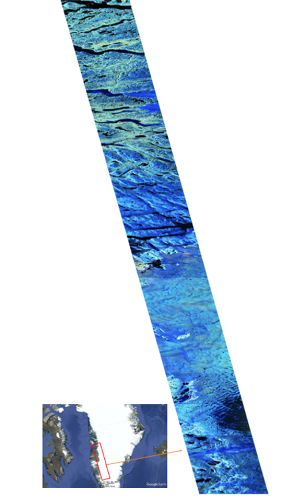

查看完整影像 ↗2019.07.08 / GF-3 / GREENLAND
从散射色彩
识别冰体状态
2019年7月8日，高分三号（GF-3）在格陵兰岛上空单轨连续获取16景全极化 SAR 数据。经极化分解后，以单次散射、二次散射和体散射分别映射至蓝、红、绿通道，生成伪彩色合成影像。影像中的颜色差异揭示了不同冰体状态对应的散射机制变化，展示了利用 GF-3 全极化观测反演冰川冻融结构的潜力。
B单次散射
R二次散射
G体散射
了解 GF-3↗